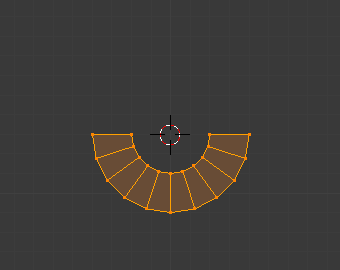
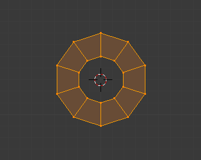
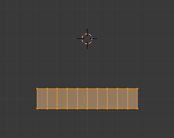
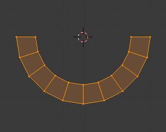
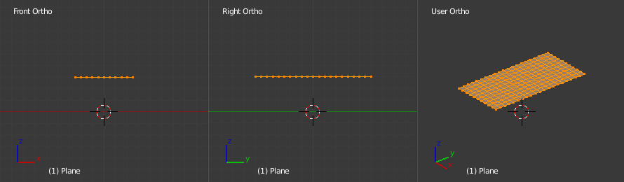

Жолоблення -- Warp¶
Орієнтир -- Reference
| Режим: | Режими Об'єкта та Правки -- Object and Edit Modes |
|---|---|
| Меню: | «Об'єкт/Сіть/Крива/Поверхня > Трансформація > Жолоблення» -- |
Опції інструмента Warp.
У режимі правки Edit Mode трансформування Warp бере виділені елементи та жолобить їх навколо 3D курсора на певний кут. Зауважте, що це трансформування завжди залежить від локації 3D курсора. Опорна Точка -- Pivot Point не враховується. Результати трансформування Warp також залежать від поточного огляду.
У режимі об'єкта Object Mode трансформування Warp бере виділені Об'єкти та змушує їх пересунутися по шляху, схожому на орбіту, навколо 3D курсора. Подібно як і у режимі правки Edit Mode, опорна точка Pivot Point не враховується, а результати залежать від поточного огляду.
Використання¶

Перед. |

Кут Жолоблення -- Warp Angle 90. |

Кут Жолоблення -- 180. |

Кут Жолоблення -- 360. |
{kind=link}
{kind=link}
Виділіть елементи, які ви хочете обробити, та активуйте інструмент трансформації Warp. Засіб Warp може задіятися за допомогою меню . Величина жолоблення, заданого для виділу, може визначатися інтерактивно шляхом руху миші або уводом числового значення. Натискання Return підтвердить це трансформування.. Підтверджене трансформування може бути далі редаговане на панелі, яка відкривається натиском на F6 або на Полиці Інструментів, T, шляхом зміни повзунка Warp Angle, при умові, що жодна інша дія не була здійснена між підтвердженням трансформації Warp та доступом до цього повзунка.
Позиція курсора та Огляд¶
Локація 3D курсора може використовуватися для зміни результатів трансформування Warp. Як можна побачити з прикладу у цьому підрозділі, радіус Warp залежить від відстані курсора до виділених елементів. Чим більша відстань, тим більший радіус.
На результат трансформації Warp також впливає ваш поточний огляд. Приклад у цьому підрозділі показує результати трансформації Warp зі значенням 180 градусів, застосованої до тієї ж сітьової Площини при різних оглядах.
|
Перед. |
|

Перед. |

Кут Жолоблення -- 180. |
{kind=link}
{kind=link}

Перед. |

Кут Жолоблення 180 в огляді XZ. |

Кут Жолоблення 180 в огляді YZ. |

Кут Жолоблення 180 в огляді, довільно заданому Користувачем. |
{kind=link}
Ghi chú
Жолоблення тексту
Якщо ви хочете жолобити текст, то вам необхідно конвертувати його з типу об'єкта Text у Mesh, натиснувши Alt-C та вибравши опцію Mesh from Curve/Meta/Surf/Text.
Приклад¶
Текст, зжолоблений навколо логотипа.
Це було зроблено шляхом створення логотипа Blender'а та тексту, як окремих Об'єктів. Текст було конвертовано у сіть, а потім зжолоблено навколо логотипа Blender'а.